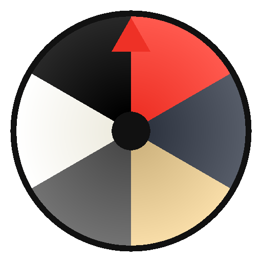

Une roue de la fortune personnalisable, installable hors-ligne sur un poste, avec une interface d'administration pour gérer les lots, les images et les réglages sans toucher au code.
config.json pour être versionnée dans le dépôt et devenir la valeur par défaut
pour tout le monde.